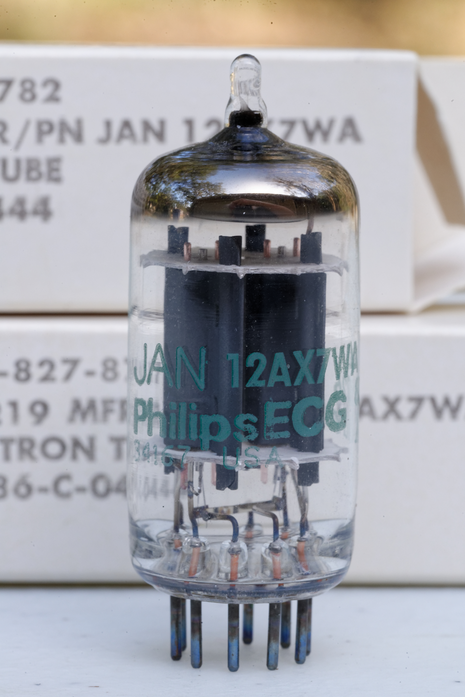
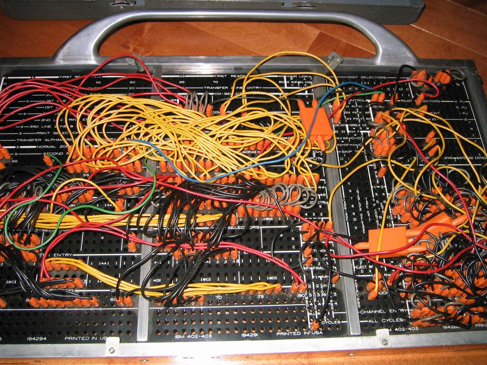
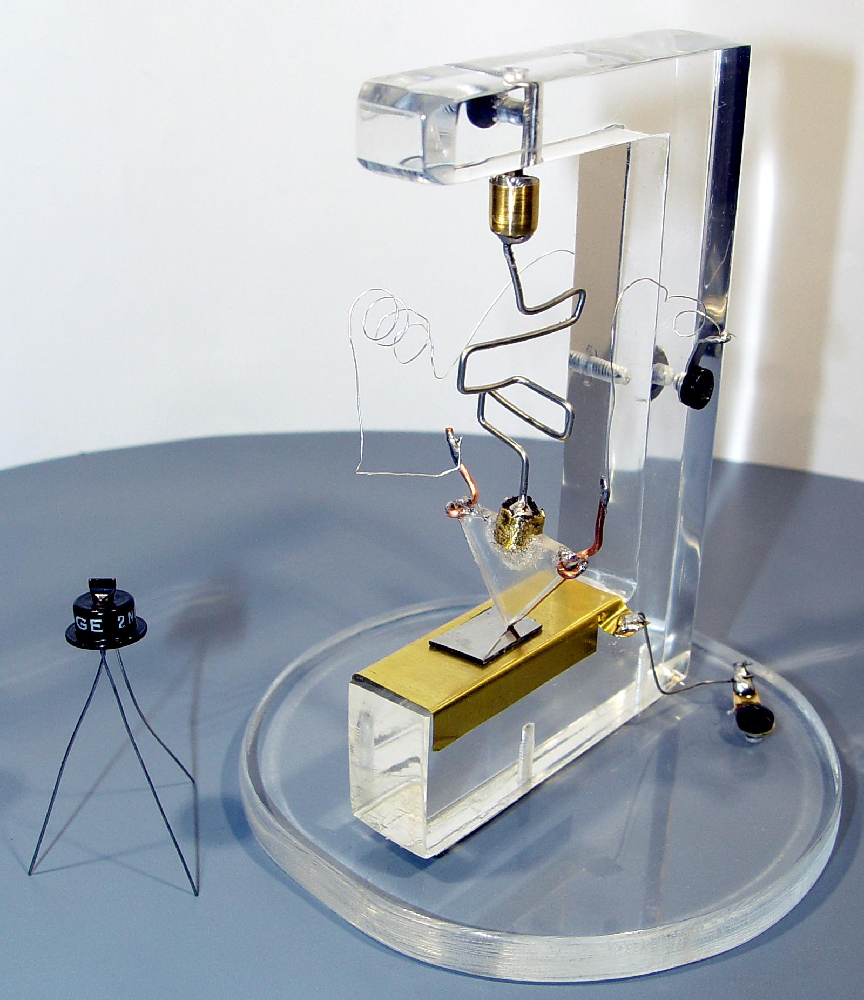
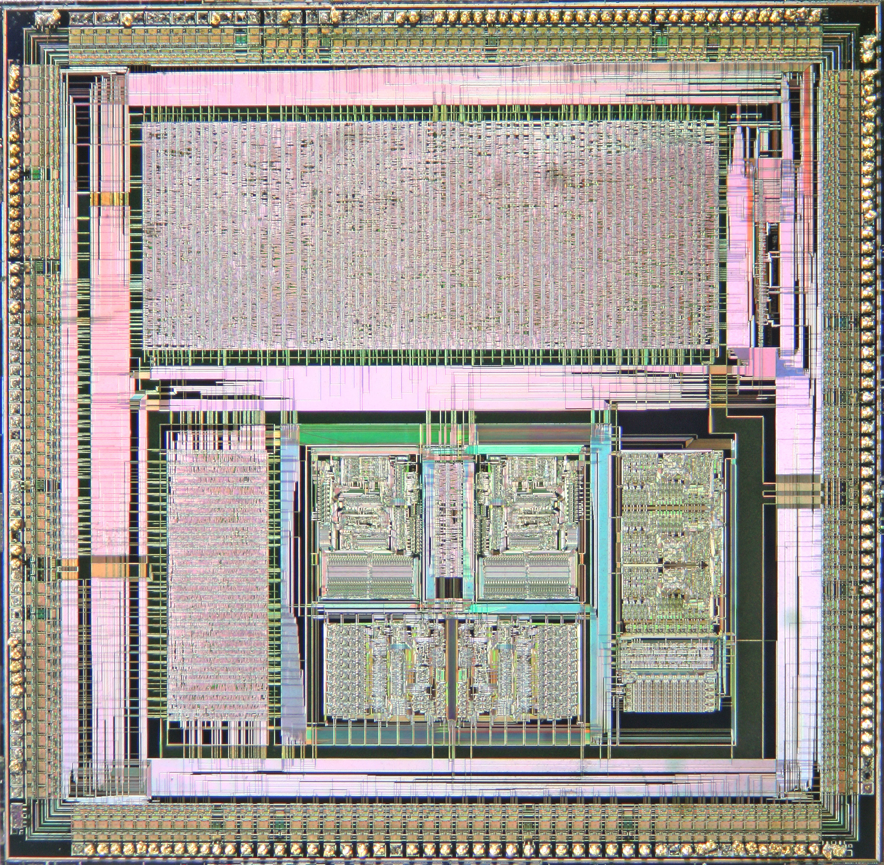
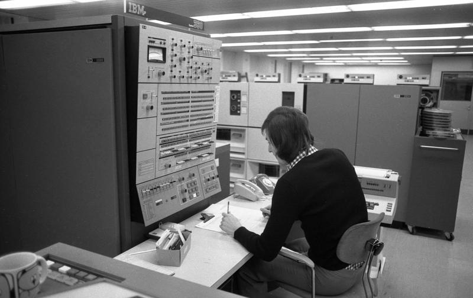
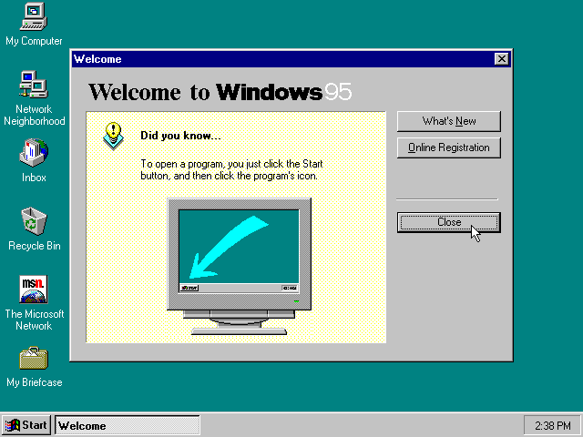

01. What Is an Operating System & History
Tanenbaum Chapter 1.1 & 1.2: Foundational Paradigms and the Five Computing Generations.
Foundational Paradigms (Tanenbaum Chapter 1.1)
To understand what an operating system is, we must examine it from two complementary perspectives: the extended machine (top-down abstraction layer) and the resource manager (bottom-up hardware multiplexer).
1. The Extended Machine (Virtualization)
Raw hardware architecture—consisting of disk controllers, volatile RAM registers, interrupt vectors, and bus timings—is notoriously complex and difficult to program directly. An operating system hides this raw complexity by providing a clean, elegant, and abstract set of instructions and abstractions (such as files, sockets, and virtual address spaces), presenting programmers with a virtual machine far superior to the physical hardware.
2. The Resource Manager (Multiplexing)
Modern computers consist of processors, memories, timers, disks, mice, keyboards, network interfaces, and printers. The operating system acts as an arbiter, managing and multiplexing these physical resources efficiently, fairly, and securely among multiple competing applications and users.
Historical Evolution & Computing Generations (Tanenbaum Chapter 1.2)
The history of operating systems is intimately tied to the evolution of computer hardware across five distinct technological generations.
Generation 1: Vacuum Tubes (1945–1955)
Early digital computers built with vacuum tubes were massive, room-sized installations characterized by immense power consumption, high component failure rates, and vacuum tubes burning out frequently during execution. Programming was performed entirely in absolute machine language (binary or decimal instruction sets) or by manually configuring external plugboards and switches.
There were no operating systems in this era; every user interaction required total manual control. A single programmer/operator team had exclusive, scheduled access to the entire physical hardware complex for a designated block of time. Common tasks—such as loading routines, input/output conversions, and debugging—were laboriously performed by hand without assembly languages, compilers, or standard runtime libraries.

Vacuum TubeThermionic valve switching components (Philips 12AX7WA).
Wikipedia: Vacuum Tube
Wikimedia Commons File Record
Author: Wikimedia Commons contributors

Plugboard WiringManual machine programming interfaces (IBM 402).
Wikipedia: Plugboard
Wikimedia Commons File Record
Author: Wikimedia Commons contributors
Generation 2: Transistors & Batch Systems (1955–1965)
The invention of the transistor at Bell Labs introduced solid-state electronics, replacing fragile and heat-generating vacuum tubes with reliable semiconductor components. This dramatic improvement allowed computers to operate continuously without frequent catastrophic hardware failures, enabling commercial manufacture and widespread adoption across large enterprises and scientific research labs.
To bridge the immense speed disparity between rapid CPU instruction execution and slow mechanical I/O devices (like card readers and line printers), this era birthed batch systems controlled by early primitive monitor programs such as GM-NAA I/O, FMS (Fortran Monitor System), and IBSYS. Jobs were written to punched cards, collected into physical batches by human operators, transferred to magnetic tape offline via secondary satellite computers, and fed sequentially into the main mainframe under control of the resident monitor program. This automated job sequencing and system control effectively formed the earliest ancestor of modern operating systems.
To bridge the immense speed disparity between rapid CPU instruction execution and slow mechanical I/O devices (like card readers and line printers), this era birthed batch systems and early primitive monitor programs (such as IBSYS and FMS). Jobs were written to punched cards, collected into physical batches by human operators, transferred to magnetic tape offline via secondary satellite computers, and fed sequentially into the main mainframe. This architecture minimized idle CPU waiting time and automated job sequencing.

First TransistorSolid-state semiconductor switching (Replica).
Wikipedia: Transistor
Wikimedia Commons File Record
Author: Wikimedia Commons contributors
 Punched Card Deck
Punched Card DeckBatch job submission media.
Wikipedia: Punched Card
Wikimedia Commons File Record
Author: Wikimedia Commons contributors (CC BY-SA 3.0)
Generation 3: ICs, Multiprogramming, & Time-Sharing (1965–1980)
Integrated circuits (ICs) revolutionized computer architecture, providing smaller, faster, and more reliable solid-state circuitry. The introduction of hardware architecture families like the IBM System/360 allowed enterprises to run both commercial and scientific workloads on compatible hardware platforms.
This generation birthed true modern operating systems. To eliminate massive CPU idle times caused by slow mechanical I/O, systems like OS/360 introduced multiprogramming—partitioning memory to hold multiple jobs simultaneously so the CPU could switch tasks when one job awaited data. Simultaneously, interactive time-sharing systems such as CTSS and MULTICS emerged, enabling multiple remote users to interact with the computer concurrently through dedicated terminals.

Integrated CircuitMicrochip scaling on silicon substrates.
Wikipedia: Integrated Circuit
Wikimedia Commons File Record
Author: Wikimedia Commons contributors (CC BY-SA 3.0)

IBM System/360Mainframe architecture family (VW-Werk Wolfsburg, 1973).
Wikipedia: IBM System/360
Bundesarchiv Record (B 145 Bild-F038812-0014)
Author: Schaack, Lothar / Bundesarchiv (CC BY-SA 3.0)
Generation 4: Personal Computers & Networks (1980–Present)
The advent of Large-Scale Integration (LSI) and Very Large-Scale Integration (VLSI) semiconductor chips made microprocessors economically viable, triggering the personal computer revolution. Operating systems shifted dramatically away from centralized multi-user mainframes toward responsive, single-user desktop environments designed for accessibility and local productivity.
Key milestones and architectural shifts during Generation 4 include:
- Graphical User Interfaces (GUIs): Pioneered at Xerox PARC and popularized by Apple Macintosh and Microsoft Windows, operating systems integrated visual window managers, icons, menus, and pointer (WIMP) paradigms, eliminating raw command-line dependency for everyday users.
- Networking & Distributed Architectures: Local Area Networks (LANs) and TCP/IP protocol stacks were integrated directly into operating system kernels, transforming isolated personal computers into interconnected nodes capable of shared file systems, printing, and client-server communication.
- Protected Memory & Preemptive Multitasking: Early single-tasking microcomputer OSs (like early MS-DOS) evolved into robust 32-bit and 64-bit architectures (such as Windows NT, modern macOS, and Linux) featuring hardware-enforced memory protection, virtual memory paging, and preemptive task scheduling.
 Macintosh 128k
Macintosh 128kEarly personal computer with graphical desktop interface.
Wikipedia: Macintosh 128k
Wikimedia Commons File Record
Author: Wikimedia Commons contributors

Windows 95Desktop operating system environment.
Wikipedia File: Windows 95 at first run
Source: Wikipedia contributors
Generation 5: Mobile, Cloud, & Ubiquitous Computing (Present)
Modern operating systems power smartphones, tablets, edge sensors, and massive hyperscale cloud datacenters, emphasizing power management, containerization, and distributed virtualization.
Andrew S. Tanenbaum created MINIX in 1987 as an educational operating system to illustrate microkernel design principles. MINIX served as the primary inspiration and initial development environment for Linus Torvalds when he began writing the Linux kernel in 1991.
Operating System Ecosystem & Architecture Families
The operating system landscape spans diverse paradigms. Below is the complete visual index of all 15 system brand marks and logos organized by architectural family.